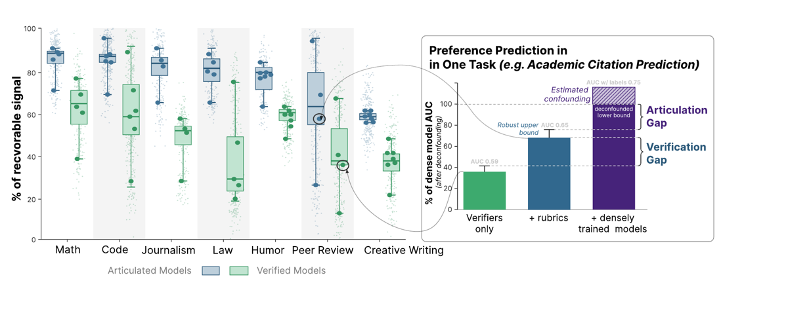
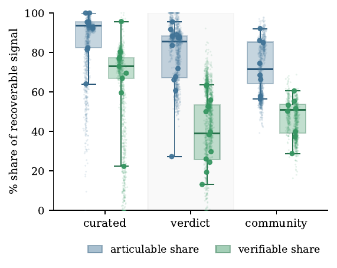
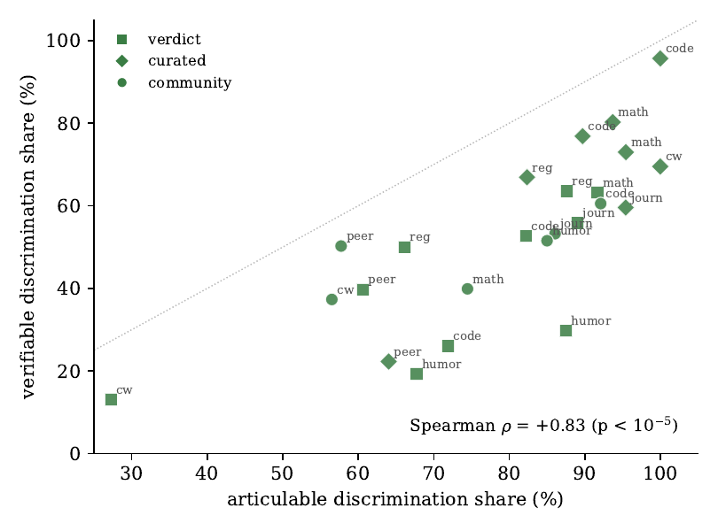

TL;DR — sur 2,8 M de textes et 42 tâches de prédiction de préférence « trouvée » (found, pas elicited) dans 7 domaines, les auteurs décomposent la préférence en trois couches emboîtées — programmes exécutables V, rubriques articulées jugées par LLM VA, modèle dense entraîné sur le texte VAT — et mesurent deux écarts : verifiability gap (VA−V) et articulability gap (VAT−VA), ce dernier étant leur opérationnalisation de la préférence tacite.
Claim principal, formulé précisément : l'articulability gap est non nul dans les 7 domaines, y compris ceux traités comme vérifiables en RLVR — jusqu'à 26 % de la préférence récupérable en math, 28 % en code, 34–39 % en peer review et creative writing [§1, §4.1] — et il survit à (i) plus de critères minés (bound capture-recapture), (ii) des prompts et juges optimisés, (iii) des agrégateurs plus expressifs, (iv) le deconfounding du modèle dense [§4.2]. Deux conséquences annoncées : le modèle dense choisit mieux que les critères articulés (selection regret > 0 sur 13/16 tâches [§5.2, App. I.1]) et optimiser vers les critères articulés éloigne de la dimension tacite (asymétrie de type Goodhart, +.023 de percentile [§5.2, App. I.2]).
Ce que ça dit des envs (catégorie AUTRE) : c'est la mesure du plafond d'un reward rubriqué. Pour un env RL, l'intérêt n'est pas le résultat « il y a du tacite » mais (a) le protocole de mesure du plafond d'une rubrique donnée (minage → implémentation double programme/rubrique → bound du non-découvert → audit spurious), directement réutilisable comme instrumentation d'un reward juridique, et (b) le catalogue de ~20 fuites de label documentées sur des corpus « naturels » (§5 ci-dessous), qui est la meilleure checklist anti-hacking de corpus que j'aie vue sur ce sujet.
evidence (6 cases binaires)baselines — vrai : V/VA/T/VAT sur lignes, folds et estimateurs identiques ; 3 méthodes publiées de découverte de critères rejouées avec un LLM partagé et scorées par le même juge ; floors par tâche (longueur, TF-IDF, base rate) rapportés [App. D.3, App. B].ablation — vrai : ≥10 ablations isolant la contribution, chacune avec kill rule fixée avant le run (whisker, decay spurious, subfield ×4, agrégateurs, corpus memory, description bottleneck, metric tree, SAE) [App. E.3, G.4, H.2, H.6].variance — vrai : bootstrap groupé 3 000 draws sur chaque AUC + LOGO + 30 demi-échantillons + intervalles appariés intra-draw [App. F.3]. ⚠️ mais full model single-seed par tâche, aveu explicite [§9].coherence — faux : §7.0 relève percentiles « .7 vs .6 » contre .71/.69 (Δ=.023) [§5.2 vs App. I.2], deux p-values pour le même sign test (.011 / .0009), « 42 tasks » contre 28 instrumentées, « ≥85 % en math » contre « 8–26 % de gap en math » dans le même paragraphe.eval — faux : contamination bien testée (Dolma ρ=.12, split au cutoff −.005 [−.033,+.023], temporal holdout), mais aucune validation du juge contre des humains au niveau critère ; seul audit humain = 50 cas AoPS / 3 auditeurs sur un label, κ≈.44 [App. B.2.3] ; labels found à bruit documenté, 2 tâches instrument-floor, 1 retirée.repro — faux : corpus « released » sans lien ni DOI ; aucun dépôt de code ; artefacts cités comme chemins internes ; versions des modèles Claude non épinglées, aveu explicite [App. C.3].⚠️ Mon évaluation : 3/6 sous-estime ce papier. Les cases perdues sanctionnent de la sur-vente d'abstract (coherence), l'absence d'accord juge-humain (eval) et l'absence de release (repro) — pas la qualité de l'audit interne, qui est au-dessus de tout ce que j'ai lu sur ce sujet (rétractations explicites de leurs propres chiffres, tâche retirée, section « Negative results »).
Found, pas elicited : aucun jugement commandé aux annotateurs ; on observe les décisions que des communautés ont réellement prises [§2]. Justification affichée : mimer l'enculturation (un chercheur apprend les normes de son champ en observant acceptations et prix, pas en lisant des critères) [§2, citant csikszentmihalyi1996creativity, lamont2009how].
Trois canaux de préférence (axe central du papier) [§2, Tab. 1] : - gatekeeper verdict : un décideur accepte/rejette chaque item soumis (merge d'une PR, réponse d'une agence à un commentaire, acceptation ICLR, retrait par un modérateur) ; - expert curation : sélection top-k dans un pool (bounty, spotlight/oral, best-paper, placement en une, Wigleaf Top 50) ; - community votes : agrégation de votes/engagement (upvotes, citations, followers, most-read).
Domaines et volumes (extraits de Tab. 1 et App. A.1) : code (GitHub PR 44 751 ; Stack Overflow 16 001/23 498/12 202), math (mathlib 8 494 ; Math.SE 13 001/23 972/100 000 ; AoPS 25 454), droit & policy (brevets 579 084 — retiré, voir §7.0 ; notice-and-comment 9 521/7 084/9 520), académique (ICLR 28 402 ; best-paper 11 613 ; spotlight 7 941 ; citations 2 387), journalisme (press releases 72 315 ; homepage 183 708 ; BBC 50 761 ; tweets 46 456), fiction (WritingPrompts 96 080 ; RoyalRoad 135 598 ; Kindle Scout 726 ; Wigleaf 1 568), humour (r/Jokes 383 786 ; macro-norm removals 73 268 + 64 788 ; HashtagWars 12 734 ; SNL 72).
Cinq « disciplines de construction » imposées à chaque dataset [App. A.1] : (i) labels institutionnels (la trace enregistrée de la communauté, jamais un jugement commandé) ; (ii) rendering apparié — les deux classes passent une seule pipeline de normalisation + une sonde char-n-gram groupée avant qu'un instrument lise le texte ; (iii) anchored judging — chaque batch de scoring du juge porte des items-ancres à label connu, aveugles ; (iv) splits = hash de contenu, jamais un shuffle seedé, pour qu'un item ne change pas de split quand le corpus grossit ; (v) confounds déclarés par tâche (longueur, ère, venue, mix de genres).
Le détail par corpus (App. B, ~2 000 lignes) est d'une granularité rare : filtres exacts, seuils, variables de matching, règles de dedup, et les corrections qui ont invalidé des résultats antérieurs, annoncées comme retracted. Exemples :
- GitHub PR : dedup host|repo|pr_number|verdict, drop des repos dont l'écart médian de date merged/rejected > 12 mois, équilibrage intra-repo (≥10/classe), matching hongrois 1:1 sur (log LOC, n_files, year) sous masques durs [App. B.1.1].
- Math.SE v3.3 : équilibrage dans (décile de propensity question cross-fittée × bin de 3 ans) → 99 722 lignes 50/50, floor question-only ramené de .6496 à .4690 [App. B.2.2].
- RoyalRoad : matching glouton 1:1 sur une distance additive explicite sur 4 variables de listing, sans caliper [App. B.6.2].
2,8 M textes / 317 M « actes de préférence » / 44 datasets / 42 tâches / 37 types de label [§1, App. A.1, Tab. 1]. Décomposition honnête des 317 M : 16 M seulement sont des décisions/reviews/votes individuellement enregistrés, le reste sont des totaux de votes et d'engagement ; deux lignes portent des labels produits par un LLM et comptent zéro acte ; les lignes tweet-engagement et Reddit-score sont des bornes basses [App. A.1]. Pas de distribution de difficulté par item ; la difficulté est mesurée au niveau tâche par le ceiling = AUC du meilleur instrument (App. F.2, Fig. fig5_auc_appendix), qui va de ~.59 (spotlight) à ~.92 (r/Jokes removals).
Pas de filtrage par pass@k (pas de génération). Les filtres sont des filtres de validité : seuils de longueur, dedup MinHash LSH (char 9-grams, 128 permutations, seuil 0.5 pour WritingPrompts ; word 5-shingles Jaccard ≥0.8 pour r/Jokes), « corner filter » (Math.SE : positifs = accepted ∧ score ≥3, négatifs = score ≤0, milieu jeté), question-disjointness, exclusion des candidats dérivés d'une solution éditoriale (CodeChef : 48/449 candidats étaient le code éditorial, taux positif 1.000 vs .706) [App. B.1.3, B.2.2].
Sans objet (pas de RL). Le seul analogue : l'ordre des mining rounds de critères, chaque round étant dirigé vers le résidu (items mal classés) du précédent [§3.1 n.14, App. D.1].
Sans objet. Les modèles « denses » sont des reward models entraînés par LoRA supervisée sur la cible binaire, un run full-data par tâche [App. E.2].
Très faible et explicitement assumé comme une limite : aucune rubrique écrite par un expert du domaine, aucun vérifieur construit à la main — tout est miné parmi 53 413 critères humains préexistants [companion_codability] ou proposé par un LLM et raffiné contre un objectif non supervisé [§9]. Interventions humaines recensées : 2 annotateurs humains décrivant 50 items à fort gap par tâche [§5.1, App. H.5] ; audit à la main de 60 cas d'opinions judiciaires (20 par slice) [App. B.3.3] ; audit 50 cas AoPS par 3 auditeurs aveugles (accord .72, κ≈.44) [App. B.2.3] ; 30 matchs best-paper validés à la main [App. B.4.2]. Aucune heure d'expert chiffrée → « non précisé ».
Il n'y a pas d'environnement RL. Ce qui en tient lieu : un harness de scoring de critères et un harness d'exécution de tests.
1.0 / 0.5 / 0.0 / NA [App. C.2, C.3].Pas d'agent, pas d'appel d'outil par un modèle en boucle. Les « outils » sont côté pipeline :
- tier exécutable (V) : audit strict de ce qu'un programme certifie. Sur les 940 colonnes V du papier, 17 sont exécutables (toutes sur GitHub PR : tests lancés contre le patch), 918 sont « surface » (longueur, structure, lexique, readability), 5 sont métadonnées/scores appris [App. C.1]. Conséquence assumée par les auteurs : « we read the verifiable share of Figure 1 as a surface share everywhere except code ». ⚠️ C'est l'aveu le plus important du papier pour quiconque parle de RLVR.
- checks exécutables construits post hoc pour chaque tâche où c'était faisable, avec couverture et AUC [App. C.1, tab. vexec] : droit (N&C) « les sections CFR/USC/FR citées existent ; la partie citée correspond à la règle » → 11–13 % des items citent quoi que ce soit, AUC .44–.50 ; journalisme « les chiffres annoncés correspondent aux faits XBRL du déposant » → 0,6 % des items, AUC .458 ; math (AoPS) « la réponse finale correspond à la clé » → 46,2 %, AUC .572 ; creative writing « contraintes du prompt satisfaites » → 0,4 %.
- harness d'exécution de tests (le seul vrai vérifieur) : chaque PR rejouée en conteneur, git reset --hard HEAD → git clean -fdx -e.git → git checkout $PARENT_COMMIT, retry de fetch, trois strikes, vérification des tree hashes contre git show -s --format=%T sur le parent et la head patchée, puis arbre de décision ordonné de verdicts (env_broken_post_patch, fix, regression avec couche de véracité, regression_via_gone, new_passing, new_failing, no_change_still_broken, no_change_all_pass) [App. C.2, B.1.1].
- retrieval brevets : index FAISS IVF_FLAT sur ~20 M documents USPTO (~200 M chunks de paragraphes, ~228 GB brut), bi-encoder bge-m3 + cross-encoder élément→paragraphe (AUC .844 contre le juge LLM) + soft-min tuné ; juge localize-then-verify Gemma-4-31B à deux étages [App. B.3.1].
Tout est single-turn côté juge (un critère, un item, un token). Le multi-turn existe seulement au niveau de la boucle de découverte : jusqu'à 7 rounds de proposition par campagne, 4 à 8 proposers par round issus de 3 familles de modèles [App. C.3, tab. proposer-fleet]. Règle d'arrêt gelée : 2 rounds consécutifs de gain moniteur < ε=.005, 5 rounds max [App. D.2].
3548789868c5, 518276fb130d) [App. C.3]. ⚠️ Le juge FP8 d'un autre leg a un plancher de non-déterminisme de ±.02 AUC, donc « les gaps sous ~.03 sont dans le bruit » [App. B.3.3].-O2 -std=gnu++17, timeout de compilation 45 s, timeout 5 s par test, limite d'adressage 1 024 MB, comparaison exacte des sorties, gate_pass = compiled ∧ pass_rate = 1.0 → 2 217 gated → 1 830 compilés (82,5 %) → 1 548 passant tous les tests (69,8 %) contre ~15 % avant le re-scrape [App. B.1.3].NA est une réponse de première classe du juge (« no evidence bearing on it ») ; les taux de NA sont suivis et rapportés (ex. 65 % → 21 % après re-scoring au protocole de référence sur les press releases ; 27 % → 8 % sur peer review après optimisation du prompt) [App. C.3, H.3].go test -json incluait le chemin de sous-test, qui embarque ports éphémères et seeds → identités de test différentes pour un code identique → fausses régressions sur toutes les PR sans changement ; re-keying sur buckets d'identité stable a converti 1 051 lignes et tous les résultats fail→pass/pass→fail antérieurs sont déclarés void [App. B.1.1].Pas de trajectoire (pas d'agent). Le papier fournit à la place le programme complet derrière un check V (creative writing, « plot-arc shape proxy », critère classical plot structure and causality) [App. C.2] :
def score(text: str) -> float:
n = max(1, len(re.findall(r"\w+", t)))
len_score = math.tanh(n/500) # length adequacy for plot
paras = [p for p in t.split("\n\n") if p.strip]
para_score = math.tanh(len(paras)/8) # paragraphing signals structure
# split into thirds; verb (-ed/-ing) density per third
vcounts = [density(third) for third in thirds(t)]
# escalation: middle and end should carry the action
esc = 0.8 if vcounts[1], vcounts[2] >= 0.9*vcounts[0] else 0.5
return clip(0.4*len_score + 0.3*para_score + 0.3*esc, 0, 1)
Commentaire des auteurs, à retenir : « The program does not compute causality ; the V→A step measures the difference between what this program computes and what the criterion means » [App. C.2].
C'est le cœur du papier : trois vérifieurs emboîtés, et la mesure de ce qui manque à chacun.
| Tier | Implémentation | Rôle |
|---|---|---|
V |
programmes déterministes écrits par LLM puis raffinés par GEPA [agrawal2025gepa] + tests exécutés en conteneur | borne « RLVR » |
VA |
V + banque de rubriques scorées par LLM-judge, prompts optimisés par ε-certification [companion_prompts] |
borne « RLAIF / rubriques » |
VAT |
modèle dense entraîné sur (texte, label) ± bloc de scores de critères ; fusion choisie sur eval, rapportée sur test | borne « RLHF dense » |
Agrégation : top-k features par régression sparse, puis tête gelée (logistic standardisée ou gradient boosting), AUC out-of-fold sous GroupKFold(5) groupé par l'unité de la tâche [§3.1, App. B.4.1].
Outcome-level binaire, crédit partiel sur 3 niveaux par critère (1.0 / 0.5 / 0.0 + NA). Agrégation apprise, non pondérée à la main. Test direct de la quantification : rescoring de Math.SE bounty avec l'espérance sous les top-20 log-probs au lieu de l'argmax → accord médian ρ=.81 par critère, +.003 pour A et +.004 pour VA → quantifier à 4 tokens coûte ≤.004 AUC [App. C.5].
Pas de pénalité de format/longueur (pas d'entraînement RL). En revanche la longueur est traitée comme confondant et non comme terme de reward : équilibrage par bins de longueur, résidualisation, et baselines « longueur seule » systématiquement rapportées (sur le label d'outcome N&C, tous les instruments égalent la baseline longueur : V .595, A .592, V+A .593, dense .588 vs longueur .595) [App. B.3.2].
Mesurée, et c'est le point fort :
- Anchor battery dans chaque shard de scoring : items à label connu, aveugles, ordre exigé positif > négatif > texte scramblé ; AUC cohérent-vs-scramblé .97–1.00 sur les 5 juges du sweep creative writing [App. C.5, tab. judge-sweep-cw]. Ancres N&C : 3 commentaires synthétiques (lettre d'association professionnelle forte / infirmière rurale / rant en majuscules) scorés .872 / .523 / .032, identiques dans chaque shard [App. B.3.2].
- Judge-family sweep : 7 juges, 6 familles, ~1,7 M jugements par juge sur 2 tâches. Spread total de VA = .023 (math.SE) et .031 (SO) ; tous les juges alternatifs sont sous le juge de référence, donc chaque swap élargit le gap rapporté [App. C.5, tab. judge-sweep]. Les juges s'ordonnent par capacité, pas par famille. Mais : les implémentations au niveau critère diffèrent fortement (ρ de rang par critère contre la référence : médiane .16–.45 math, .18–.59 SO) → « which words carry the signal depends on the judge ; how much signal the bank recovers does not ».
- Panel de 7 juges empilés (3–4× plus de features que n'importe quel juge seul) : +.004 / +.005 seulement → le plafond du choix de juge est ≈ un demi-point d'AUC [App. C.5].
- Fidelity (objectif non supervisé, sans label) : cohérence de label entre runs indépendants + bottleneck de reconstruction (un prompt peut-il être reconstruit depuis ses labels) + mesures synthétiques à valeur connue et vérifiable (« combien de points d'interrogation ») ; un batch dont les mesures synthétiques ne sont pas correctement détectées est re-scoré [§3.1 n.9].
- Accord avec des humains : quasi absent. Un seul audit humain quantifié, sur un label et non sur les critères : 50 cas AoPS, 3 auditeurs aveugles → accord .72, κ≈.44 (.85 sur les cas haute confiance), juge jugé conservateur plutôt que yes-biased [App. B.2.3]. Aucune validation juge-vs-humain au niveau critère → case eval fausse.
- Bruit du juge mesuré par paraphrase : 3 paraphrases label-blind + 2 variantes de scaffold, ICC médiane .83 (jokes) / .84 (stories) / .62 (ICLR) / .69 (citations) ; moyenner 6 readouts déplace VA de +.008 [App. H.4]. Les banques peer review sont les moins fiables et sont flaggées.
You are an expert [domain] judge. You are given [the item] and ONE quality
criterion. Decide how strongly the item, on its own evidence, satisfies that
criterion. Answer with EXACTLY ONE token:
1.0 = clearly satisfies 0.5 = partially / borderline
0.0 = fails / cuts against NA = no evidence bearing on it
CRITERION: [name] DESCRIPTION: [text below]
Rubriques complètes recopiées pour les 12 critères de Tab. 2 [App. C.2]. Exemples (les deux premiers sont transposables tels quels à un mémo juridique) : - Line-by-line justifiability and explicitness (gap-aware) : « Each inference is warranted and checkable ; nontrivial facts are cited or proved ; assumptions used are explicit ; any omitted steps are minor and clearly signaled (no disguised jumps). » - Logical correctness, rigor, and completeness : « Airtight logic with every step justified, case splits exhaustive/disjoint, no hidden assumptions, field-appropriate standards of rigor. » - Small, focused, reviewable changes : « Keep changes well-scoped and single-purpose… » - Elegance and beauty of proofs : « Value brevity with simplicity and inevitability, aesthetic clarity, and generality… » Note : le prompt système de la banque peer review se termine par « Judge the paper's quality, not whether it will be accepted. » [App. B.4.1] — séparation explicite construct / outcome.
Oui, et c'est le deuxième point fort. Audit spurious en 5 étages / 14 composants [App. E.1, Fig. fig:spurious-audit] : (1) degeneracy + anchors ; (2) channel tests — scramble probe, régression surface-proxy, invariance par paraphrase, capture-fingerprint probe (classifieur char-n-gram entraîné sur le split de classe) ; (3) path tests — survie intra-strate, survie en paires appariées, group-shuffle null, transport test, décomposition multitrait-multiméthode par route de capture ; (4) interventions limitées à la couche de capture (re-dérivation partagée, ablation de spans énumérables) — la réécriture libre du texte est exclue par principe, « tacit features are by definition unnamed, so no edit to content can be verified to preserve them » ; (5) adjudication LLM déclarée comme engagement de construct, pas comme test.
Validation par artefacts plantés : marque de note de bas de page ajoutée à 55 % des blagues positives et 15 % des négatives (AUC seule .70), avec un critère déguisé en craft (« typographic closure after the punchline ») → les deux critères plantés reçoivent 3 flags (surface R² .89 et 1.00, fingerprint ρ .60/.62, AUC .70 → .50 intra-strates), 0 des 112 critères genuine n'est flaggé, un adjudicateur aveugle route correctement les 9 critères de test et les 156 paires de sondes plantées des 39 rounds de minage [App. E.1, tab. audit-bench]. Limite honnête : la scramble probe rate le token planté (le shuffle le déplace), il faut le fingerprint ou les strates.
Aucun RL. À noter pour ne pas se tromper de lecture : le papier parle de RLVR/RLAIF/RLHF comme régimes analogues à V/VA/VAT [§3], mais n'entraîne aucune policy et le dit [§5.2].
T/VAT ; têtes gelées (logistic / GBM) pour V/VA.VAT = texte suivi d'un bloc VA metrics: <criterion>: <score>. Candidats de fusion : LoRA conditionné, rank mean, blend pondéré sur eval, meilleur parent, stack logistique ; candidat choisi sur eval, rapporté sur test — ce qui explique que VAT puisse être sous T (7 lignes sur 26) [App. F.1].fig_missing_mass_appendix].Il n'y a pas de reward hacking par une policy (pas de policy). Mais le papier est, de fait, un catalogue de hacking du label par le corpus — exactement les modes de défaillance qu'on rencontre en construisant un env à partir de données trouvées. Chaque cas suit le format comportement → détection → correction.
| Fuite | Détection | Correction | Effet chiffré |
|---|---|---|---|
Flags d'auteur dans les titres de PR ([WIP], « do not merge ») |
lift par trigramme + fingerprint probe | 14 regex, jusqu'à 3 passes, texte strippé mais PR conservée | « do not merge » → 7 % d'accept vs 86 % de base [App. B.1.1] |
| PR mergées par un bot labellisées « rejected » | lecture des titres (85 titres sur 141 644) ; ratée par les top n-grams, attrapée par l'enumerable-span test | label flip 0→1 sur 10 patterns | merge rate .19 dans la notice vs .86 hors [App. E.1] |
| Identité du repo | base rate par repo vs AUC dense | split repo-disjoint | base rate repo seule = .794 > dense .749 → ladder entière retractée ; dense repo-disjoint = .584 [App. B.1.1] |
| Compression d'ère du côté « kept » des removals (1–6 jours vs 11 mois) | sonde char-n-gram régularisée | re-échantillonnage uniforme en strates de quinzaine sur la fenêtre complète | floor .806→.760 (humour), .834→.808 (long-form) [App. B.7.2] |
| Typographie (guillemets courbes côté éditeur) | sonde embedding sur split groupé par contest | normalisation agressive identique des deux côtés, ponctuation terminale strippée | AUC .996 → .730 → écart char-word −.001 [App. B.7.5] |
| Provenance d'archive (Top50 en live, longlist en Wayback) | champ de provenance comme prédicteur | re-fetch de toutes les positives via Wayback | provenance AUC .90 → .500 ; TF-IDF .799 → .541 [App. B.6.4] |
| Signature du transcripteur (fan transcripts vs ASR) | sonde char-n-gram | re-transcription des deux classes par un seul ASR | .73 → .55 [App. B.7.4] |
| Temps de lecture collé au titre (« Years3 min read ») | audit de texte | suppression du word-boundary initial de la regex | résidu .1105 → .0000 [App. B.5.2] |
| Position du titre cible dans la chaîne de contexte | audit | retrait du titre cible + shuffle des ancres restantes | top à ~.25 de la chaîne, bottom à ~.73 [App. B.5.2] |
| Fuite par le news cycle (99 % des titres focaux apparaissent dans le contexte d'une autre ligne) | sweep non groupé à .86 contre estimé deconfondu .75 | grouping par snapshot (md5 du set trié des préfixes de titres) | règle adoptée : un AUC d'entraînement nettement au-dessus d'une estimation deconfondue indépendante est une signature de fuite jusqu'à preuve du contraire [App. B.8] |
| Âge de la réponse (Math.SE / SO) | 411 604 paires intra-question | design intra-question + propensity cross-fittée | la réponse la plus ancienne gagne 67,3 % du temps, 76,4 % si Δscore ≥5 ; la plus longue seulement 52,9 % [App. B.2.2] |
| Near-copies éditoriales (LeetCode) | normalisation + Jaccard tokens >0.83 ∨ cos >0.95 | exclusion de 4 030 near-copies | 66,5 % des positifs étaient des near-copies ; .686 → .568 [App. B.1.3] |
| Candidat = la solution éditoriale elle-même (CodeChef) | taux positif 1.000 vs .706 | règle projet : exclure les candidats dérivés de l'éditorial | AUC groupée .7293 → .6704 [App. B.1.3] |
| Candidate set conditionné au label (brevets) | has_gold seul → AUC .9983 ; gold en dernier slot 86,6 % du temps |
tâche retirée du papier | la comparaison « 1 % verifiable vs 70 % dense » est retractée dans les deux sens [App. H.6, Tab. master-results note w] |
| Identité de l'examinateur (brevets) | leave-one-out leniency | rapportée comme diagnostic de contamination, jamais comme baseline | examiner-LOO .681 > toute baseline texte .654–.658 [App. B.3.1] |
| Blocs de faits hallucinés depuis un template sur des formulaires de remand sans faits (droit) | 60 cas lus à la main → 5/20 sur une slice, 4 des 5 positifs | drop de 2 639 / 52 841 lignes (5,0 %, taux positif .94) ; garde réutilisable exportée | lexical .740→.719, articulé .641→.630, dense .784→.782 → le gap tacite s'élargit .044→.063 [App. B.3.3] |
| Statut pro se détectable dans les faits (droit) | audit de métadonnées | retiré du pool canonique | 17,5 % d'une slice, win rate 3,9 % vs 14 %, détectable à .83 même phrase strippée [App. B.3.3] |
Label circulaire (y = zero review threads, mathlib) |
accord 1.0 avec la définition littérale ; profil de leakage (days_open .67, n_commits .70, n_force_pushes .77) |
label retiré, remplacé par accept/reject | [App. B.2.1] |
| Label « any-MADE » confondu par le nombre de réponses appariées | feature « nombre de labels » seule | remplacé par un vote majoritaire | label-count seul .695 sur any-MADE vs .589 sur le vote majoritaire [App. B.3.2] |
| Pseudo-labelling en masse par un petit juge | gate d'accord | remplacé par distillation cross-encoder, triage seulement | κ = 0.388, asymétrie faux-négatifs 61:1 [App. B.1.3] |
Pattern énoncé par les auteurs, à retenir mot pour mot : « an easily built label that correlates with the construct through a side channel will pass casual inspection and fail a targeted audit » [App. H.6].
Comportements émergents inattendus : (i) l'humour est très articulable (≈85 % sur r/Jokes upvotes) alors que les auteurs s'attendaient au contraire — « it seems jokes truly can be explained in words » — mais c'est le champ le moins vérifiable (34 % de la part articulable), le plus grand « stated-but-uncheckable band » du benchmark [§4.1, App. F.6] ; (ii) un fit poolé sur 9 subreddits reporte comme tacite ce qui est en réalité de l'hétérogénéité inter-communautés non modélisée : refit par communauté, VA passe de .606 poolé à .837 sur r/books [App. G.5, tab. subfield-communities] — le plus important avertissement méthodologique du papier.
| Chiffre annoncé | Où il est annoncé | Source dans le papier | Verdict |
|---|---|---|---|
| « 2.8M texts labeled by 317M human preference judgments… 42 benchmark tasks » | abstract, §1 | App. A.1 : 2,8 M textes, 317 M actes, 44 datasets ; Tab. 1 : 42 tâches / 37 types de label ; App. F.1 : 32 lignes tâche-label instrumentées, 28 avec un full model, 1 retirée | sur-généralisé : (a) seules 16 M des 317 M sont des décisions individuellement enregistrées, le reste sont des totaux de votes/engagement, et 2 lignes sont labellisées par un LLM ; (b) les figures et toutes les corrélations reposent sur 28 tâches, pas 42 |
| « ≥85 % of preference in code, math, journalism and law can be articulated » | §1 | Médianes par domaine de Fig. 1 ; mais le même §1 donne « math : 8–26 % articulability gaps », et Tab. master-results donne Math.SE votes = (.640−.5)/(.688−.5) = 74,5 % articulable | sur-généralisé : vrai de la médiane par domaine, faux de la borne basse par tâche. Les deux phrases du même paragraphe se contredisent en apparence |
| « math preference has 8–26 % articulability gaps ; software engineering 8–28 % » | §1 | Recalculé depuis App. F.1 : Math.SE accepted 8,3 %, Math.SE votes 25,5 % ; SO accepted 11,7 %, GitHub PR 28,1 % | confirmé |
| « peer review and creative writing have the largest articulability gaps… 34–39 % » | abstract, §4.1 | App. G.3, tab. field-participants : story upvotes .435, citations .423, ICLR accept .394, spotlight .360 | confirmé pour la borne haute ; le « 34–39 % » du §4.1 est en dessous des .435 tabulés (la part tacite maximale est donc sous- annoncée) |
| « verifiable metrics explain between 13 % and 80 % of shared preference in every domain » | §4.1 | App. F.6, Fig. fig_artic_verif_scatter : points de 13 % (creative writing verdict) à ~96 % (code) |
confirmé sur la borne basse, borne haute conservatrice |
| « gaps widen as more people take part in the judgment » | abstract, §5.1 | §5.1 et App. H.4 : ρ=.46, p=.016, n=28 ; médianes par canal community .047 / verdict .044 / curated .022, Kruskal-Wallis H=9,05, p=.011 | confirmé mais fragile : les auteurs ajoutent eux-mêmes que LOO R² ≈ .15, que le gap ne suit pas l'accountability (.27, n.s.) et que dans App. G.3 ils concluent que cette corrélation « is the channel ordering in another form » |
| « the full model more closely matches human preferences » (conséquence 1) | abstract, §5.2 | Tab. 3 (5 tâches) et App. I.1, tab. regret-all (16 tâches) : regret > 0 sur 13/16, nul sur 2, négatif sur 1 (caption crowd −.250) | confirmé, avec une incohérence de test : la légende de Tab. 3 donne « sign test one-sided p=.011 » (13/16) et App. I.1 « a sign test over the fourteen non-zero tasks gives p=.0009 ». Les deux sont dérivables mais de deux conventions différentes pour la même phrase |
| « VAT's top pick is in the .7 percentile of VA's rankings, while VA's top pick is only in the .6 on VAT's » | §5.2 | App. I.2 : .71 vs .69, différence .023 [.004,.042] sur 852 pools | contredit : le texte principal (« .7 » vs « .6 ») suggère un écart de ~.10 ; la valeur mesurée est .023. Sur-arrondi qui gonfle l'effet Goodhart d'un facteur ~4 |
| « articulating preference shifts it away from the tacit dimension » (Goodhart) | abstract, §5.2 | App. I.2, tab. pools : A′ = +.034 [−.025,.095] (CW 150 prompts, CI contient 0), +.047 [.009,.084] (CW 402), +.051 [.004,.096] (jokes), −.011 [−.087,.065] (Math.SE) | sur-généralisé : significatif sur 2 readouts sur 4, nul/négatif sur Math.SE. Les auteurs notent en plus qu'ils n'ont pas séparé l'asymétrie d'une interaction de queue ou de la grossièreté du score à 4 niveaux |
| « we estimate upper and lower bounds for each gap » | abstract | App. D.2, tab. whisker-coverage : 10 tâches sur 28 portent le bound (2 campagnes non éligibles) ; App. E.3 : 13 tâches ont un ledger de décroissance | sur-généralisé : « each gap » → au mieux 10 et 13 tâches respectivement |
| « gaps occur across all domains » | abstract | App. F.1 : 2 tâches sans gap du tout (competition editorial-approach, Wigleaf), brevets retirés, mathlib non calculable, SNL et RoyalRoad pickup au hasard ; App. D.3 : le whisker couvre le gap sur BBC most-read (−.005) et N&C rule change est à parité (+.001) | sur-généralisé au niveau tâche, défendable au niveau domaine |
| « the largest, broadest dataset of preferences across creative domains » | §2 | aucune comparaison quantitative aux datasets cités | introuvable |
| Domaine | Tâche | Canal | V | VA | +mined | T | VAT | part tacite |
|---|---|---|---|---|---|---|---|---|
| Code | GitHub PR merged | verdict | .550 | .631 | .638 | u/q | .692 | .281 |
| Code | SO accepted answer | verdict | .639 | .733 | n/c | .743 | .764 | .117 |
| Math | Math.SE accepted | verdict | .591 | .632 | .618 | .644 | .630 | .083 |
| Math | Math.SE votes | community | .575 | .611 | .640 | .654 | .688 | .255 |
| Droit | N&C: received a response | verdict | .711 | .775 | .791 | .817 | .832 | .123 |
| Droit | N&C: rule change made | curated | .591 | .612 | .616 | .624 | .636 | .147 |
| Droit | Patent application granted | verdict | — | — | w/d | w/d | — | retirée |
| Académique | ICLR accept/reject | verdict | — | .654 | .668 | .777 | .747 | .394 |
| Académique | Citation percentile | community | .695 | .655 | .724 | .884 | .888 | .423 |
| Journalisme | Editorial pickup | verdict | .653 | .658 | .749 | .774 | .750 | .109 |
| Fiction | Story upvotes (WP) | community | .609 | .650 | .665 | .792 | .790 | .435 |
| Humour | r/Jokes removal | verdict | .603 | .904 | n/c | .922 | .923 | — |
| Humour | Macro-norm removals (5 subs) | verdict | .561 | .714 | n/c | .816 | .816 | — |
Régularité centrale : V < VA ≤ max(T, VAT) sur presque toutes les tâches ; V dépasse VA sur 5 lignes ; VAT est sous T sur 7 des 26 lignes qui ont les deux [App. F.1].
Head-to-head de la découverte de critères [App. D.3, tab. metric-discovery] — le résultat le plus important pour juger du plafond d'une rubrique : aucune banque articulée, ni la leur, ni HypoGeniC, ni HypotheSAEs, ni ExperiGen, ni les quatre empilées, n'atteint le full model sur aucune tâche. Part tacite moyenne sur les 13 tâches bornées : .38 contre leur banque seule, .21 contre le plafond engagé (max(ours, ours+union) + whisker). ExperiGen est la meilleure méthode externe (meilleure sur 10 tâches, devant leur banque sur 6).
Taille de modèle : juges 7B→70B → VA monte de ~.03–.08 selon la tâche, ordre = capacité, pas famille [App. C.5]. Base dense : Qwen2.5-7B vs Llama-3.1-8B → Δ ≤ .007 sur 2 tâches, 3 seeds [App. C.5]. Données : +.03 AUC par doublement en brut, mais résidu deconfondu +.006 à +.013 à pleine échelle [App. F.5].
Plausible mais fragile sur le claim causal, solide sur le claim de mesure. Le fait que les rubriques automatiquement minées plafonnent sous un modèle dense est établi avec un niveau d'audit que je n'ai pas vu ailleurs. Le pas supplémentaire — « ce résidu est de la connaissance tacite collective » — repose sur une élimination de rivaux, et deux résultats du papier lui-même l'entament sérieusement : (i) le résidu deconfondu tombe à/sous la banque sur 10 tâches sur 13, (ii) une description libre de 60 mots en capture 77 %. Les auteurs écrivent eux-mêmes « we do not positively establish our measured quantities measure tacit knowledge, only negatively rule out competing explanations » [§1 n.5] et « It is not shown to be tacit knowledge as a person holds it » [§9] — à leur crédit, le papier ne sur-vend pas dans ses limites, il sur-vend dans son abstract.

Ce qu'il faut voir : chaque point est une des 28 tâches, en % du signal récupérable (= AUC(VAT)−.5). (a) Les boîtes bleues (articulable) restent hautes partout — 85–90 % de médiane en math, code, journalisme, droit — et ne s'effondrent que sur peer review (~65, boîte très étalée .55–.95) et creative writing (~59) : le plafond d'une rubrique est élevé mais jamais 100 %. (b) Les boîtes vertes (vérifiable) sont systématiquement bien plus basses et surtout bien plus dispersées — le droit descend à ~29 de médiane avec une queue à ~20, c'est le domaine où l'écart bleu-vert est le plus large après creative writing. (c) L'encart montre la mécanique :verifiers only .59 → + rubrics .65 → + densely trained models .75, avec la bande hachurée = confounding estimé, donc la barre violette est lue comme une borne basse après deconfounding. À retenir : pour le droit, ce n'est pas l'articulabilité qui manque, c'est la vérifiabilité.

Ce qu'il faut voir : l'ordonnancement des canaux, qui est le résultat sociologique du papier. curated (sélection top-k par un expert qui signe) est le plus articulable (médiane ~94) ; verdict suit (~86) ; community est le moins articulable (~71). Lecture des auteurs : les curateurs doivent défendre leurs choix, ce qui favorise les critères énonçables [App. F.2]. Deux nuances à garder : la curation a aussi les ceilings les plus bas (un jury de prix est difficile à prédire pour n'importe quel instrument), donc ses petits gaps se lisent contre un petit signal total ; et la part vérifiable des verdicts est très dispersée (médiane ~39, de 13 à 64).
Ce qu'il faut voir : tous les points sont sous la diagonale — ce qu'un champ peut dire, il ne peut jamais entièrement le réduire à des checks. ρ=+.83 sur les 24 points tracés (+.63 sur les 28 tâches du texte). Les pointsreg (notice-and-comment, le droit) sont sur la diagonale ou proches (82/67, 89/64, 61/50) : c'est un champ où une grande partie de ce qui est articulable est aussi programmable — citations de provisions, identifiants de docket, périmètre de la demande. humor est l'exception inverse (87 articulable / 30 vérifiable). ⚠️ Les auteurs testent eux-mêmes le null emboîté : le simple fait que V ≤ VA produit déjà ρ≈.67, donc le .84 observé est à comparer à .67, pas à 0 [App. F.6].
Le papier contient du juridique : notice-and-comment rulemaking (3 labels, instrumenté), brevets (retiré), et un corpus de 12 domaines d'issues contentieuses (appendix-only). C'est donc à la fois une méthode transposable et une mesure déjà faite sur le droit.
| Ingrédient | Choix du papier | Équivalent juridique | Transfert | Ce qui manque |
|---|---|---|---|---|
| Source des tâches | labels found, trace enregistrée de la communauté, jamais un jugement commandé [§2] | décisions enregistrées : réponse d'une agence à un commentaire, grant/abandon d'une demande, issue au fond, acceptation d'un amendement, mémo retenu par un associé | direct — et déjà fait (N&C : 9 521 / 7 084 / 9 520 ; 12 domaines × 2 000 lignes équilibrées) | les labels Harvey LAB / Vals sont elicited par des experts, pas found ; le papier ne couvre pas ce régime, et note que l'elicitation « under observation tends to return articulated preferences » [§6.1] |
| Vérifieur | 3 tiers emboîtés + bound du non-découvert + audit spurious ; 918/940 colonnes V sont surface, pas exécutable [App. C.1] |
en droit, le tier exécutable existe mais est creux : « les sections CFR/USC/FR citées existent, la partie citée correspond à la règle » couvre 11–13 % des items, AUC .44–.50 [App. C.1, tab. vexec] | adaptable | le vrai vérifieur juridique — la citation existe-t-elle, dit-elle ce qu'on lui fait dire, est-elle toujours bon droit — n'est pas implémenté ici ; le papier teste l'existence de la citation, pas son support |
| Harness / outils | 1 prompt par (item, critère), 4 tokens, température 0, ancres aveugles dans chaque shard, degeneracy guard, scoring une seule fois puis attachement des labels par leg [App. B.4.1, C.2] | identique pour une rubrique de mémo juridique | direct | gestion du contexte long : les items du papier sont courts (abstracts, commentaires, réponses) ; un mémo de 40 pages dépasse les budgets audités (3 600+2 400 chars) |
| Algo | aucun RL ; LoRA supervisée + têtes gelées | — | non (rien à transférer côté optimisation) | tout : la question « optimiser vers la rubrique dégrade-t-il la préférence tacite » n'est testée qu'en best-of-N, pas en RL ; les auteurs le disent [§5.2] |
| Curriculum | rounds de minage dirigés vers le résidu, stop à 2 rounds < ε=.005 | minage de critères sur les mémos que la rubrique classe mal | direct comme protocole de construction de rubrique | le minage par sous-champ ne gagne rien (own-agency −.002 en moyenne sur 14 agences) [App. H.2] → ne pas espérer qu'une rubrique par juridiction fasse la différence |
| Anti-hacking | audit spurious 5 étages, artefacts plantés détectés à 100 %, re-dérivation par une seule pipeline, splits par hash d'unité naturelle | fuites juridiques attestées dans ce papier : statut pro se détectable à .83, langage de disposition dans les faits, blocs de faits hallucinés (5/20), identité de l'examinateur à .681 | direct — c'est l'ingrédient le plus immédiatement réutilisable | aucune sonde pour la fuite spécifique au droit la plus probable : la juridiction / le siège / le cabinet comme proxy du résultat |
Points durs du droit, confrontés aux chiffres du papier :
- Pas de vérifieur exact → confirmé et chiffré : sur le label d'outcome N&C, V (27 features regex) .595, A (198 rubriques) .592, V+A .593, dense .588, contre longueur seule .595 ; les issues de règle se décident au niveau du docket (63 % des dockets multi-commentaires sont outcome-pure, concordance intra-docket .498 = hasard) [App. B.3.2]. ⚠️ Autrement dit : sur l'une des deux tâches juridiques, aucun instrument ne bat la longueur, parce que l'unité de décision n'est pas l'item.
- Réponses longues et argumentées → le seul résultat du papier qui va dans ce sens : dans le canal community, la part tacite croît avec la longueur de l'item (ρ=+.89, n=6) [App. G.2], et la distinction « composition jugée pour elle-même » (part tacite .30 sur 8 tâches) vs « réponse à un problème posé » (.13 sur 11) est le clivage le plus net du papier (Mann-Whitney p=.0006, post hoc) [App. G.4]. Un mémo juridique est une réponse, pas une composition → bonne nouvelle pour une rubrique.
- Citations à vérifier → le chiffre à retenir : le juge localize-then-verify sur l'art antérieur est 95 % « real » sous adjudication par panel et 97,6 % verbatim-grounded, et retourne pourtant « not disclosed » 27,3 % du temps alors même que son span tombe sur le paragraphe exactement cité par l'examinateur [App. B.3.1]. C'est, à ma connaissance, la meilleure estimation publiée du faux-négatif irréductible d'un vérifieur de citation juridique.
- Coût des experts → le papier fonctionne sans aucun expert et le déclare comme limite : « No rubric was written by a domain expert for this study and no verifier was built by hand… the estimated upper bounds for articulation and verification are for automatic and mined articulation » [§9]. Une rubrique écrite par un praticien devrait dépasser la borne haute estimée pour changer la lecture — c'est exactement l'expérience qu'une équipe avec accès à des juristes peut faire et qu'eux ne pouvaient pas.
- Variance inter-décideurs → attestée hors de leur mesure : inspecteurs de sécurité alimentaire appliquant un seul code écrit à des conditions identiques en désaccord 60 % du temps, et ce qui réduit le désaccord est la revue par les pairs, pas plus de règles [§7, citant Ho 2017] ; effets fixes examinateur = .117 de la variance des citations reçues [App. J, Cockburn et al.] ; halver le temps par demande augmente le taux de grant de 9–19 points à examinateur et standard écrit constants [App. J, Frakes & Wasserman].
Le protocole de mesure du plafond d'une rubrique, dans l'ordre exact : (1) miner les critères par plusieurs proposers décorrélés sur les items mal classés ; (2) implémenter chaque critère deux fois, en programme et en rubrique, et optimiser chacun contre un objectif non supervisé (fidelity) et non contre le label ; (3) router chaque critère par l'audit spurious (scramble, fingerprint, survie intra-strate, adjudication) ; (4) entraîner un modèle dense sur (texte, décision) comme borne haute ; (5) estimer par capture-recapture ce que des critères non découverts pourraient encore ajouter ; (6) lire l'écart. Pourquoi : c'est la seule manière publiée de répondre à « notre rubrique est-elle près du plafond ou juste mauvaise ? », et c'est exactement la question qui se pose avant d'investir dans une rubrique Harvey LAB.
Sur un corpus juridique à décision enregistrée (p. ex. 2–5 k commentaires N&C d'une même agence, ou 2–5 k décisions TTAB, groupées par docket/owner avec splits par hash d'entité) :
1. Écrire deux banques de rubriques : une minée automatiquement au protocole du papier, une écrite par 2–3 juristes seniors (~20–30 critères).
2. Scorer les deux avec le même juge (1 prompt/(item, critère), 4 tokens, ancres aveugles par batch), entraîner un dense Llama/Gemma LoRA sur les mêmes splits, et mesurer V, VA_auto, VA_expert, VA_auto+expert, T.
3. Faire tourner l'audit spurious avec un artefact planté (un marqueur de cabinet ou de juridiction corrélé au label à 55/15) pour certifier que la batterie détecte.
Résultat attendu, à partir des chiffres du papier : VA_auto ≈ .59–.79 selon le label, T − VA_auto ≈ .02–.05 sur les labels réglementaires [App. F.1], et la question décisive est si VA_expert dépasse VA_auto + whisker. Deux issues, toutes deux actionnables : si oui, l'expertise humaine achète du reward signal mesurable et il faut budgéter des juristes-rédacteurs de rubriques ; si non (mon pari, vu que les critères minés par sous-champ n'ajoutent rien et que 7 juges empilés n'ajoutent que .005), alors le plafond rubriqué est structurel et il faut un signal dense ou un humain dans la boucle sur la fraction résiduelle. Coût : négligeable en GPU, quelques jours-juriste.
Deux, dans l'ordre : 1. Sur Gemini Law, mesure-t-on le plafond de nos rubriques, ou seulement leur accord avec des humains ? Si notre éval repose sur une rubrique jugée par LLM, quelle est notre borne haute estimée — et avons-nous l'équivalent du whisker (ce qu'un critère non encore écrit pourrait ajouter) ? Sans ça, un plateau de reward est indiscernable d'un plafond de rubrique. 2. Nos ancres de juge sont-elles dans chaque batch de scoring, et notre split est-il un hash d'entité (cabinet, juridiction, docket) ou un shuffle ? Les deux fuites les plus coûteuses du papier (base rate de repo .794 > dense .749 ; compression d'ère côté contrôle) auraient été invisibles sans ces deux disciplines, et la seconde est exactement la forme que prendrait une fuite « cabinet » ou « juridiction » dans un corpus juridique.